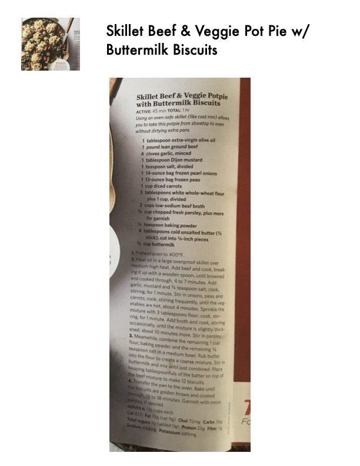

Skillet Beef & Veggie Potpie with Buttermilk Biscuits

Original cookbook page 58
Using an oven-safe skillet (like cast iron) allows you to take this potpie from stovetop to oven without dirtying extra pans.
Total: 1 hr
Ingredients
- 1 tablespoon extra-virgin olive oil
- 1 pound lean ground beef
- 4 cloves garlic, minced
- 1 tablespoon Dijon mustard
- 1 teaspoon salt, divided
- 1 14-ounce bag frozen pearl onions
- 1 12-ounce bag frozen peas
- 1 cup diced carrots
- 3 tablespoons white whole-wheat flour plus 1 cup, divided
- 3 cups low-sodium beef broth
- ½ cup chopped fresh parsley, plus more for garnish
- ½ teaspoon baking powder
- 4 tablespoons cold unsalted butter (½ stick), cut into ½-inch pieces
- ½ cup buttermilk
Instructions
- Preheat oven to 400°F.
- Heat oil in a large ovenproof skillet over medium-high heat. Add beef and cook, breaking it up with a wooden spoon, until browned and cooked through, 4 to 7 minutes. Add garlic, mustard and ½ teaspoon salt; cook, stirring, for 1 minute. Stir in onions, peas and carrots; cook, stirring frequently, until the vegetables are hot, about 4 minutes. Sprinkle the mixture with 3 tablespoons flour; cook, stirring, for 1 minute. Add broth and cook, stirring occasionally, until the mixture is slightly thickened, about 10 minutes more. Stir in parsley.
- Meanwhile, combine the remaining 1 cup flour, baking powder and the remaining ¼ teaspoon salt in a medium bowl. Rub butter into the flour to create a coarse mixture. Stir in buttermilk and mix until just combined. Place heaping tablespoonfuls of the batter on top of the beef mixture to make 12 biscuits.
- Transfer the pan to the oven. Bake until the biscuits are golden brown and cooked through, 15 to 18 minutes. Garnish with more parsley, if desired.
Recipe #58 from collection